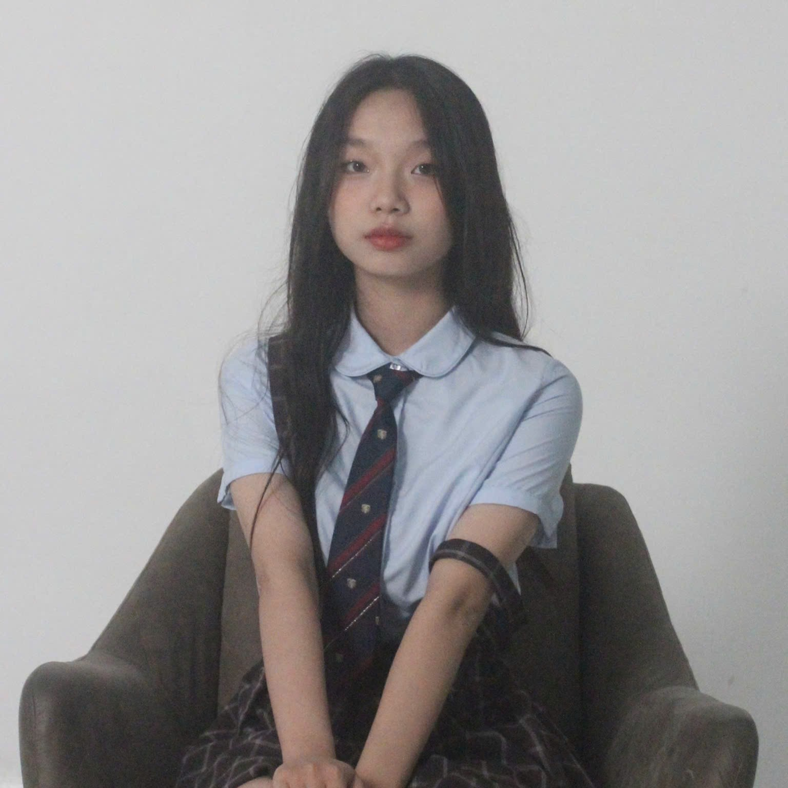

Hiện tại mình là sinh viên ngành Kinh tế Quốc tế khóa QH-2025-E tại Trường Đại học Kinh tế – Đại học Quốc gia Hà Nội. Trong "thế giới" này, kinh tế không hề khô khan mà chứa đựng những câu chuyện đầy hấp dẫn - nơi một biến động nhỏ của tỷ giá hay một hiệp định thương mại mới đều có thể thay đổi cục diện của cả một quốc gia.
Portfolio này chính là cuốn nhật ký số ghi lại hành trình mình lớn lên. Tại đây, bạn sẽ thấy một Khánh Linh luôn nỗ lực tích lũy tri thức nền tảng, đồng thời chủ động làm chủ các công cụ công nghệ mới để nâng cao năng lực cạnh tranh trong tương lai.
Cảm ơn bạn đã ghé thăm, hy vọng bạn sẽ tìm thấy những điều thú vị tại không gian nhỏ này của mình nhé!
Mình là người năng động, thích quan sát và tò mò về cách thế giới vận hành qua lăng kính kinh tế. Ngoài giờ học, mình thích đọc tin tài chính, xem podcast kinh doanh và đi cà phê cùng bạn thân.
Portfolio này đóng vai trò như một kho lưu trữ số bài bản, nơi mình hệ thống hóa toàn bộ các bài tập thực hành, các dự án nghiên cứu và sản phẩm công nghệ đã thực hiện trong suốt môn học, giúp mình không chỉ nhìn lại chặng đường tiến bộ của bản thân qua từng giai đoạn mà còn gìn giữ được những trải nghiệm quý giá, những bài học về tư duy giải quyết vấn đề đầy thực tế cùng những kỷ niệm đáng nhớ trong suốt khoảng thời gian học tập và cộng tác cùng thầy cô, bạn bè dưới mái trường ĐHQGHN.
Chủ đề: Hành trình khám phá AI và Công nghệ số trong lĩnh vực Ngoại ngữ và Giáo dục.
Kéo ngang để xem hết các bài tập mình đã hoàn thành nhé
← kéo để xem thêm →
Vài mảnh giấy note mình dán lại sau một kỳ học nhiều trải nghiệm